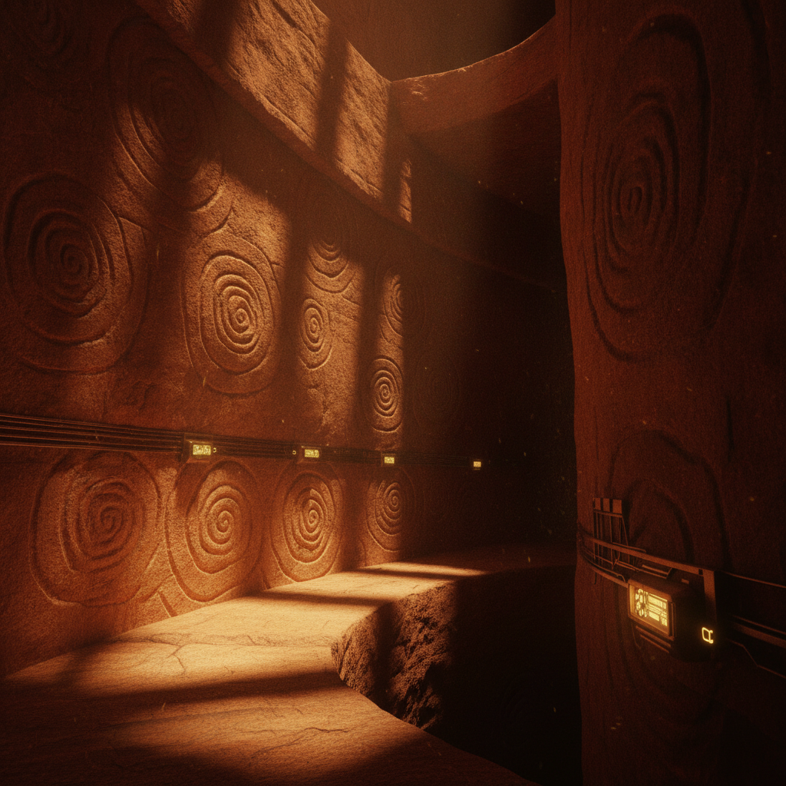
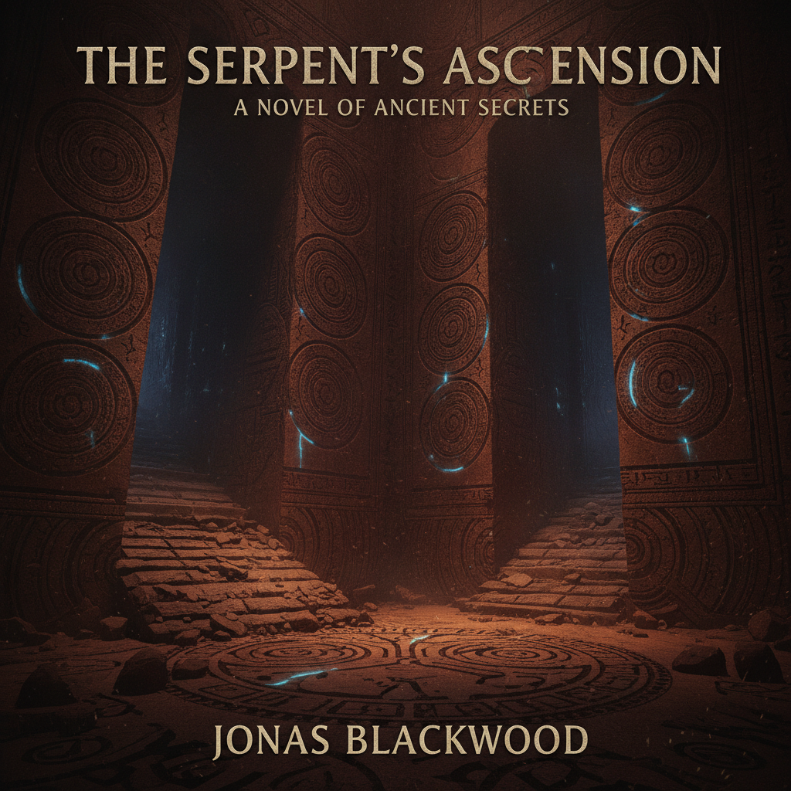
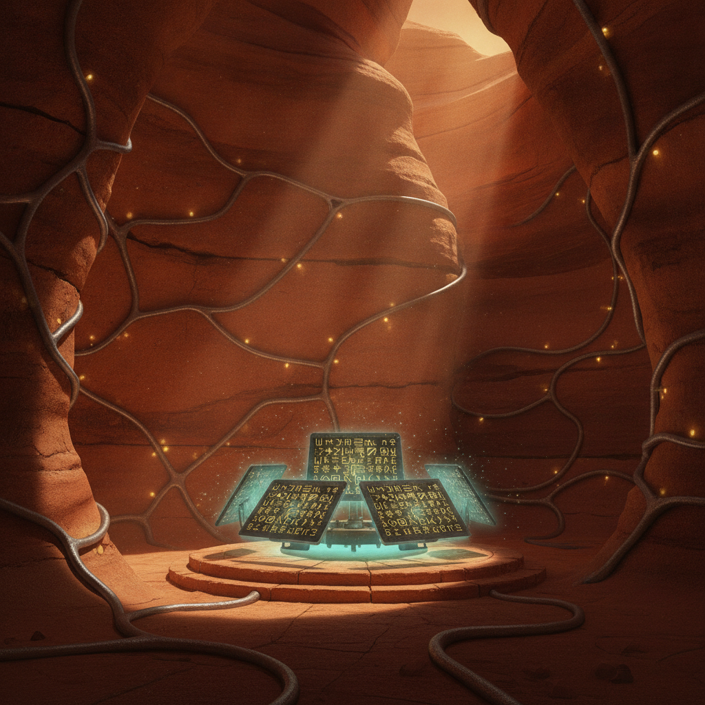
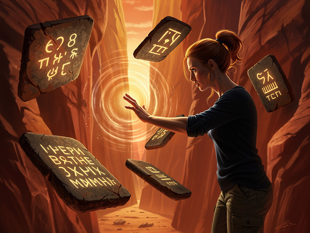
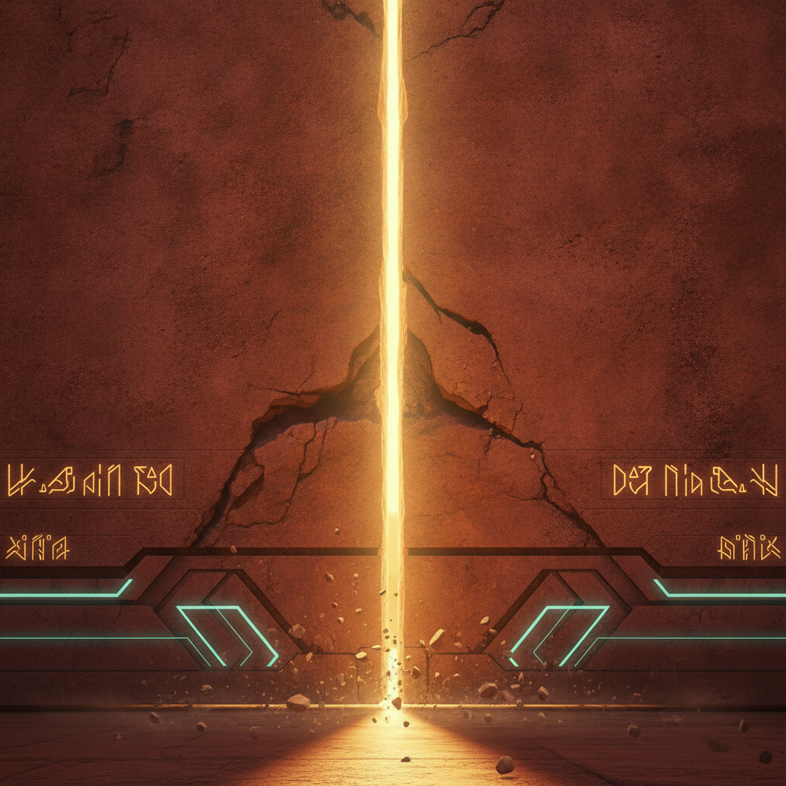
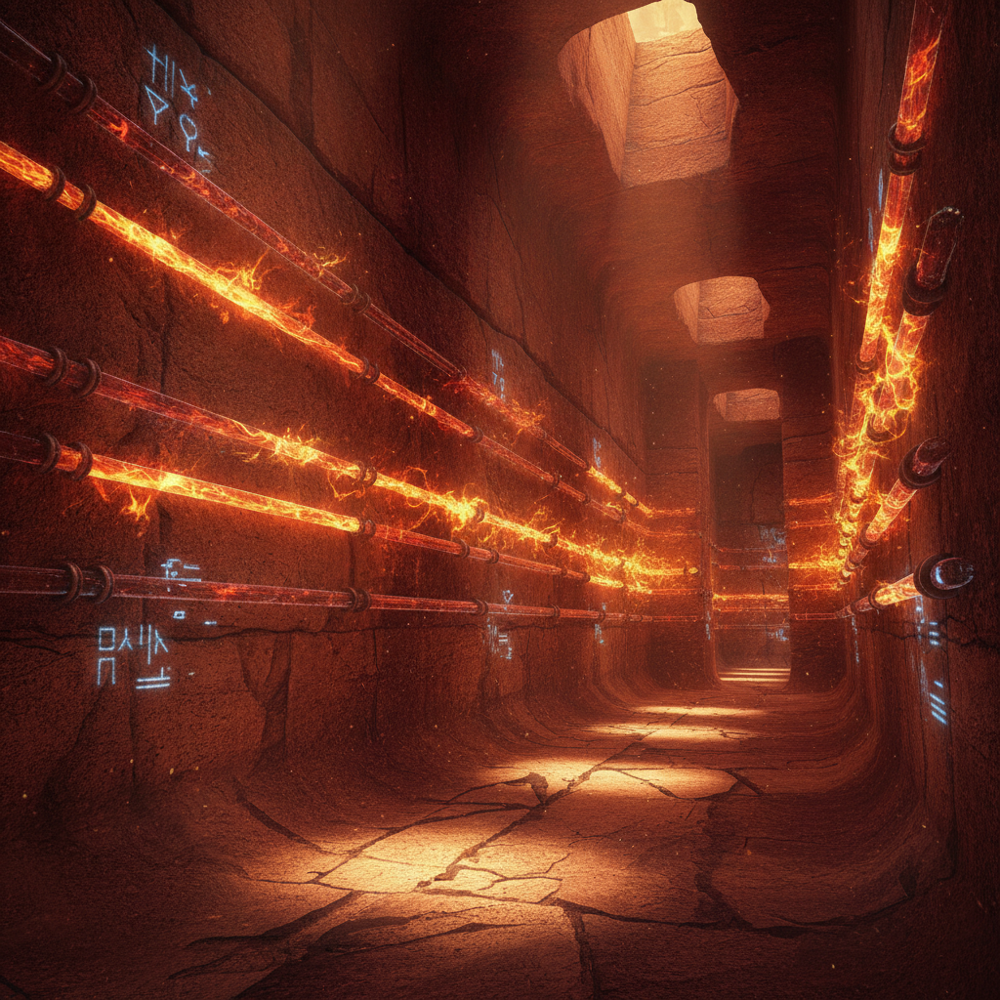
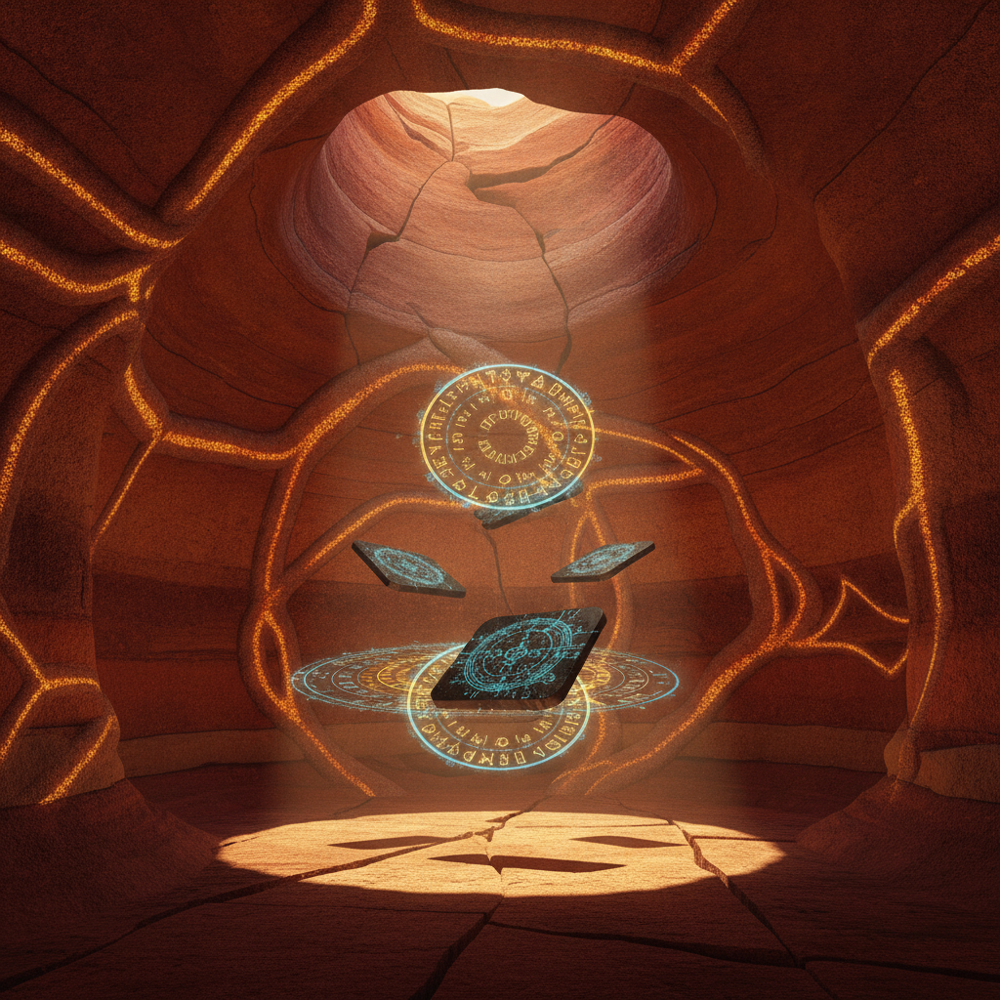
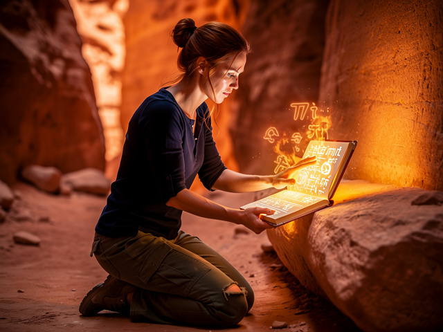
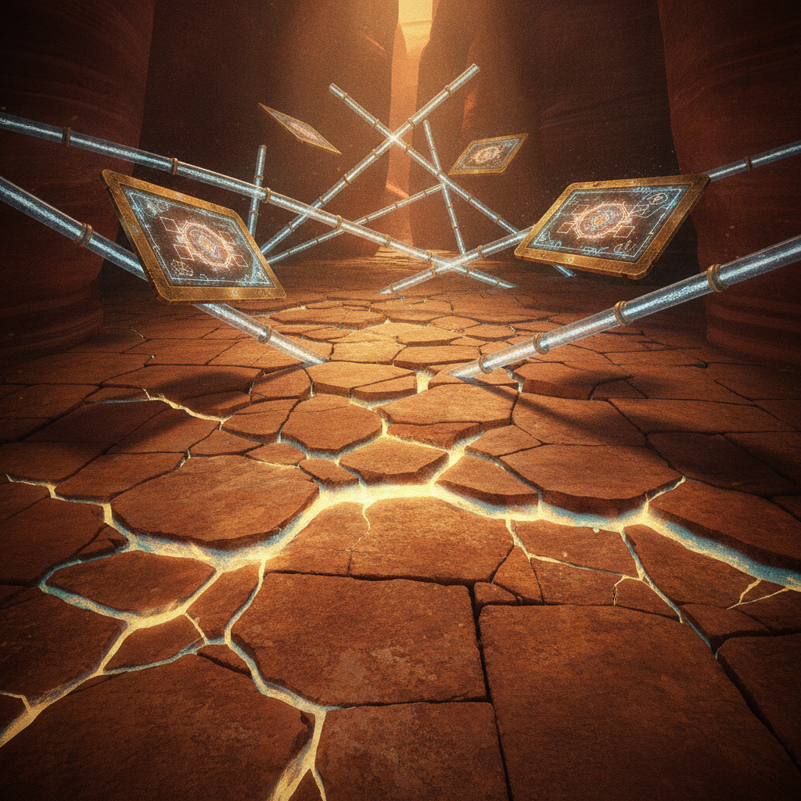

My heart seized as the relentless drone loomed overhead, a mechanical vulture. I stumbled back, nearly losing my footing on the slick stone. The sound—a muted *thunk*—resonated down the spiral, cutting through the low hum like a knife. My throat tightened with the air, unnaturally still and heavy.
"Move!" Tawa snapped, urgency lacing his voice. He shoved the journal into my chest and grabbed my arm, dragging me deeper into the fissure.
The stone beneath us thrummed—a low, rhythmic pulse I could feel in my teeth. Not a metaphor. Not the echo of my own heartbeat. A vibration with intent, moving through the rock like blood through veins.
We squeezed through the narrow passage, our shadows merging and distorting on the wall. The hum was louder now, reverberating through the tunnel, and I noticed for the first time how it shifted in pitch—almost conversational, as if responding to our presence.

"We have to find another way out," I said, my words clipped, panic threading each syllable.
"Others have been trapped before," Tawa muttered, stopping at a fork. He scanned the passages, his decision quick. "They'll close it like they always do—erase everything."
He chose the dim pathway to our right, narrower but seeming to incline slightly. I followed close, my fingers brushing the spiral-carved walls. An electric sensation thrummed against my skin—not static, but something that felt like recognition. The stone knew I was touching it.
Behind us, the metallic grinding of the drone echoed through the tunnel we'd just left. It hadn't lost us. Not yet.
As we stumbled through jagged rock, I relived fragments of my father's last moments—his handwriting, frenzied in his final notes. *Living stone. God help us.*
The tunnel sloped upward. My bad leg screamed in protest with each risen step. My breath was ragged, matching the hum through clenched teeth. But we pushed on.

Sudden brightness exploded ahead, blinding. We emerged into a hidden chamber lit by an ethereal glow. Silver tubes lined the walls, twisting like luminescent vines, pulsing with a rhythm that synced immediately with my own heartbeat—I could feel it, a double drum in my chest.
In the center, a raised platform held tablets hovering above it, defying gravity. Intricate symbols shifted across their surfaces—neither Hopi nor Egyptian—a language of vibrating light that seemed to writhe and breathe.
Tawa halted, awestruck, his eyes wide. "What is this place?" he whispered, stepping forward as if drawn by an invisible magnetic force.

The tablets reacted to his presence. Symbols rearranged, lines pulsing with urgency. A pattern emerged—a sequence of shapes and shadows, a celestial dance etched in luminescence. But beneath that pattern, I caught something else: a flicker of imagery that made my stomach drop. For just a moment, I saw my father's face staring back from the light, his mouth open in a silent warning.
I blinked, and it was gone.
I stepped closer, my own hand reaching tentatively toward the haloed surface. My fingers brushed the edge, sending a ripple through the tablets, the symbols syncing in an instant heartbeat. A warmth cascaded through me—memories, whispers not my own.
A woman's voice, ancient and weary, spoke inside my skull: *The breath is not theirs to keep.*

Then came the sound that shattered everything: a loud metallic grinding from behind, felt deep in the stone. The entrance was sealing. I turned and watched the passage narrow, rock grinding against rock, the light from the tunnel dying inch by inch.
"We're trapped," Tawa said. Not a question. A flat acknowledgment.
The grinding stopped. The passage was gone, replaced by seamless wall. The chamber held nothing but us and the humming tablets and the tubes that pulsed like living arteries.
I felt the weight of it—the real weight. Not abstract philosophy. Not "what do we tell the world." The immediate, crushing reality that we were sealed inside a place that had chosen to seal us.

"They can't hide this," I said, voice firm despite my trembling hands. "This is something—the world needs to see this."
Tawa turned, locking eyes with me. "But it's sacred. It's not just ours to share or theirs to find. It's been hidden for a reason."
The metallic grinding intensified—but this time it wasn't the entrance. The tubes lining the walls were vibrating, their luminescence flickering with new urgency. The tablets shifted, symbols rearranging into configurations that felt almost desperate.
"We have no choice," I said. "We can't escape. We either interact with this place or we die in it."
Tawa reached forward, his fingers brushing another tablet. The air grew heavy as a deeper vibration reverberated from the tubes. They sang—a solemn, primeval hymn filling the chamber, a resonant plea with no words—but I understood it anyway. It was a question.
*What are you willing to become?*

My father had asked himself that same question, I realized. His final notes weren't frantic ramblings. They were answers. *Living stone. God help us.* He had touched this place. He had understood its nature. And the handlers had erased him for it.
"We can't leave it buried," I said, stepping back, heart pounding with each word.
He nodded reluctantly, stepping to my side. "But we must honor it first."
Together, we faced what we had awakened. The tubes pulsed around us like a second circulatory system, and I understood now—this place was not a chamber. It was a heart. The canyon was the body. And the tablets held its memories.
The grinding returned, closer now. The handlers had found the sealed entrance. They would cut through. They always did.
We had minutes.

"We need to let it speak through us," I said, the words forming before I fully understood them. "The tablets want to be recorded. Translated. Carried."
Tawa looked at me, a question in his eyes.
"I don't know how I know that," I admitted. "But I do."
He reached for the journal I still clutched against my chest. "Then write."
I opened it to a blank page, pressed it against the nearest tablet. The symbols didn't transfer as ink—they burned into the paper as light, words forming in my father's handwriting, then shifting into my own.
*The breath is not theirs to keep. The canyon remembers. The stone listens. The serpent wakes.*
The grinding grew louder. Dust sifted from the sealed entrance.

"The world will call this madness," Tawa said.
"Let them."
For once, we placed trust not in ourselves, but in the breath of the serpent—in the stories that lay embedded in canyon walls, enduring beyond time. The tablets hummed their approval. The tubes pulsed in rhythm with our hearts.
And the stone beneath our feet began to move.